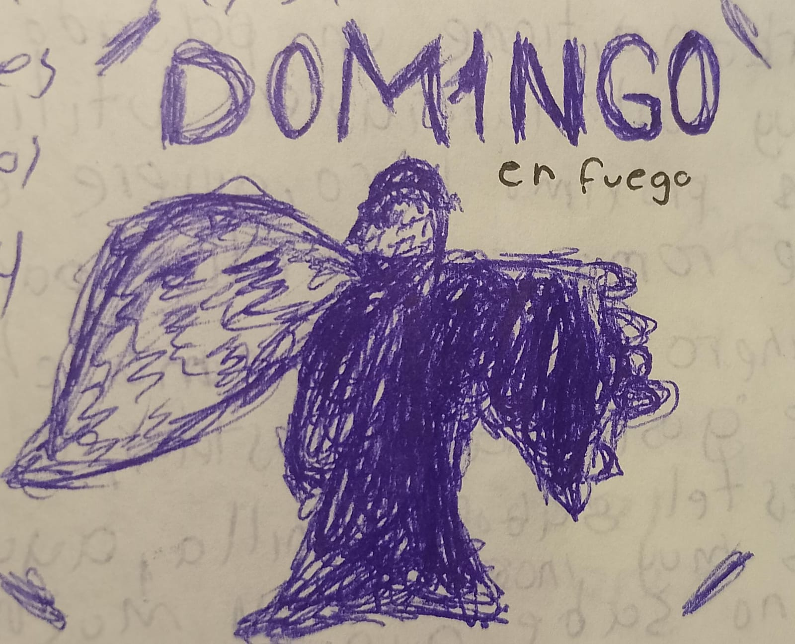

Enero 2024
12 de Enero, 2024
Okay, creé esto con tal de tener mis textos de mi libreta en un archivo de texto como podria ser
esta página, y luego poder leerlo en cualquier momento, tengo miedo sobre lo que pueda llegar a pasar realmente
no se que me depara el futuro con esto, pero creo que es una buena idea, y creo que podría ser muy útil para
ir viendo mi historia de vida desde hoy 12-1-24 y aparte de pensamientos lo usaré para notas
y todo ese tipo de cosas.
No soy tonto y se que en el futuro alguien leera esto, conociendome, sé que lo haré
13 de Enero, 2024
¿Qué es esto?
Estoy haciendo o escribiendo un libro en donde estoy escribiendo uno de los capitulos mas tranquilos y donde tengan una relacion estable ethan y Emma, ethan revelara que solo utilizó a emma para crear un romance tragico en sus historias y cuando tuviese su libro escho se iria de la forma mas culera... q feo
Ya no quiero hacer nada. Espero que esta relación que tengo con Gabriela aún siga en pie, en verdad la amo...
No quiero hacer nada, no quiero hacer nada, no quiero hacer nada, no quiero hacer nada, no quiero hacer nada, no quiero hacer nada, no quiero hacer nada, no quiero hacer nada, no quiero hacer nada, no quiero hacer nada, no quiero hacer nada, no quiero hacer nada, no quiero hacer nada
14 de Enero, 2024
Ideas
Juego de simulación de streamer donde vas ganando espectadores, necesitas trabajar, comprar componentes de PC, puedes viajar, puede ser multijugador y puedes decorar tu apartamento
15 de Enero, 2024
Sigo aquí, mirame
Me quiero matar. Amo a gabi, amo a mi familia pero prefiero realmente no amar, no sentir, ya sentí mucho, no me gusta. A veces necesitamos forzar el tiempo de introspección para saber que desiciones tomar y dedicarme mi tiempo
16 de Enero, 2024
¿Que estoy pensando en este moemnto?
¿Que hiciste ayer?
Anotar cosas de las cuales estoy agradecido
¿Que soñaste?
18 de Enero, 2024
Hace unos dias tuve una crisis de ansiedad tremenda, por que le dije a una amiga (amiga de mi novia) que es una linda persona, pero en el momemento me senti presionado, no lo pense y dispare lo que realmente tenia que decirle. Le hice mencion sobre una inconformidad la cual tenía yo con ella, al hacerle mencion de mi incofnromidad la lastime a ella, y era obvio a mi parecer, solamente queria hacerselo saber, la incofnromidad que tanto hago mencoion es esto,
contexto: Ella no sabe hablar con las demas personas y no sabe hacer mas amigos y su unica amiga desde que entro a segundo de secundaria era literalemten mi novia, le hablaba a mas personas pero eran personas 'X' sin tanto valor en su vida como lo era gabriela, por que las demas personas a las cuales ella les hablaba eran personas muy doble cara y hasta las criticaba diciendoles "nacos" pero se comenzo a juntar con ellos una vez empeze a andar con gabriela, y muchas veces ella se juntaba en los recesos conmigo y con gabriela y a mi no me agradaba del todo por que no lograbamos tener una buena comunicaicon o no nos desarrollabamos bien en cuanto a la comunicacion.
como se lo dije fue algo directo y seco, frio, crudo de mi parte, y eso provoco que causara problemas, y eso, por no encontrar las palabras correctas, aveces siento que es necesario dejar de pensar tanto las cosas, por que en la vida estamos llenos de cosas en nuestra cabeza, metas, pendientes, tareas y aveces la lista se extiende de mas, que aveces nos olvidamos de pensar en nosotros mismos, siento que yo hubiera pensado primero en mí y hubiera solucionado todas mis incofnromidades o por lo menos intentar solucionar la mayoria de mis inconformidades conmigo mismo, siento que hubiera dicho las palabras correctas en momentos adecuados, es decir, tenia tantas cosas en la mente
que soy capaz de jurar que no podia pensar con claridad ninguna de esas cosas, me sentia tan abrumado que no podia pensar tan siquiera en como decir unas simples palabras. Pero como eh dicho muchas veces EL HUBIERA NO EXISTE.
18 de Enero, 2024
se me ocurrio ponerle unas cuantas caracteristicas a ethan:
Ethan es un chico con cabello negro, alto (1.87m), color de piel color piel :u, le gusta ayudar a la gente, es escritor, en su pasado era un camarografo urbano, tiene un pasado algo no tan agradable y es alguien muy controlador, quiere utilizar a emma para su historia de romance con ella, para luego ganar dinero con eso.
Emma, chica baja (1.57m) le gust hacer postres, mas que nada pasteles, ayuda a la gente y muchas veces se distrae muy facilmente o no sabe lo que pasa a su alrededor.
Sarah, amiga de la infancia de Emma
20 de Enero, 2024 - ASCO
Le eh querido hablar a mosnerrat, amiga de gabriela pero solamente seria forzar la amistad. La vi pasar y solo vi su cara de asco, eso quedara grabado en mi cara de por vida aun que yo no lo quiera asi. La verdad esta sensacion nunca la habia tenido, nunca le habia dado asco a alguien
21 de Enero, 2024 - Nuevo album de Milo
hay una cancion de milo j que me gusto mucho que se llama Domingo y la imagen del algum es distinto, solo era por aparicion en live set de milo, per ahora aca, asi, la imagen de milo es de el con los brazos estirados con alas tiene muchos 1 en su cara por su album 111.

23 de Enero, 2024 - Aprender de nuevo
Me gustaria entrara a la preparatoria. Queria hacer un video sobre mi miedo por ir a la preparatoria, es muy estresante y pues me da miedo no poder tener tiempo de nada y eso me inquieta, me frustra el echo de suponer o asumir que cuando entre a la preparatoria no tendre tiempo de nada, y bue, igual ya quiero salir de la escuela.
ahora mismo son las 12:56 p.m y salgo a la 01:10 p.m y no dormi nada la noche pasada. quieo que el ultimo dia aun que sea el ultimo, pueda ver ese dia a gabriela por ultima vez y decirle lo mucho que la estimo por ultima vez saliendo de la escuela, decirle lo mucho que la amo
26 de Enero, 2024
A veces simplemente suelo evitar el conflicto, lo sé por que cuando veo que se va a generar uno o se esta generando uno, callo a todos, quiero tener el mayor silencio posible solo par ano escuchar al conflicto, solo verlo, y digo verlo por que es mejor ver el caos que escucharlo, a veces ver a una persona morir no duele tanto, pero ver y oir como pide ayuda, como agoniza, escuchar sus gritos, lamentos, suplicas, simplemente son cosas que desgarran el alma
simplemente es tanto ruido que no puedes pensar en nada mas que en el conflicto y a veces se te queda en la cabbeza durante bastante tiempo, esos sonidos del conflicto... desgarran
"construye el avion mientras lo vuelas"
30 de Enero, 2024
No lo sé, muchas veces tengo esta idea de que el estres es un arte desastroso, una lluvia de ideas que podemos usar a nuestro favor, para crear, para pensar un poco en nosotros, para tranqiulizarnos en tanta turbulencia que tiene la marea, aun que, pienso que no debemos de ser ignorates de nosotros mismos y tomemos en cuenta que el estres obviamente causa molestias, tanto fisicas como mentales
esto lo estoy escribiendo estando justamente en clases, y me acorde de esta nueva moda que se impone en internet sobre "romper las reglas" nos eque prendenden realmente lograr con eso, es decir, si estan ahi es por algo, no se pusieron solamente de adorno, o simplemente no quieren seguir las normas sociales cuando se te dan o cuando se te da la oportunidad de hacer algo que otras personas no se lo permiten no lo aprovechas del todo sabes?, asi hay gente
que intenta imponer estas ideas de romper las normas, cuando realmente lo que estan haciendo es no aprovechar todas las oportunidades que se les otorga. Hablo de esto por que recorde un video y escuche a un amigo que se llama Rooney decir "Para que estudio esta materia si nisiquiera la voy a ver en mi carrera" pero yo creo que esta mal esa forma de pensar por que podemos aprender siempre y eso no esta mal, es mas, nos volvemos hasta mas cultos.